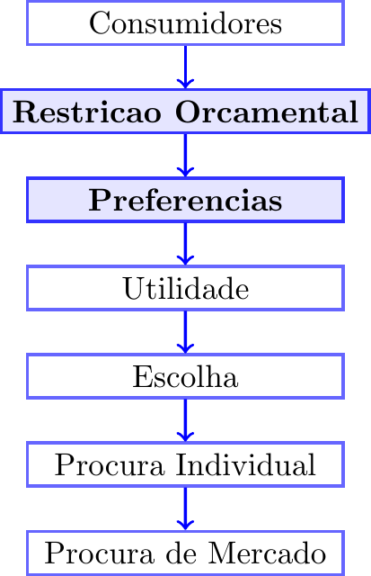
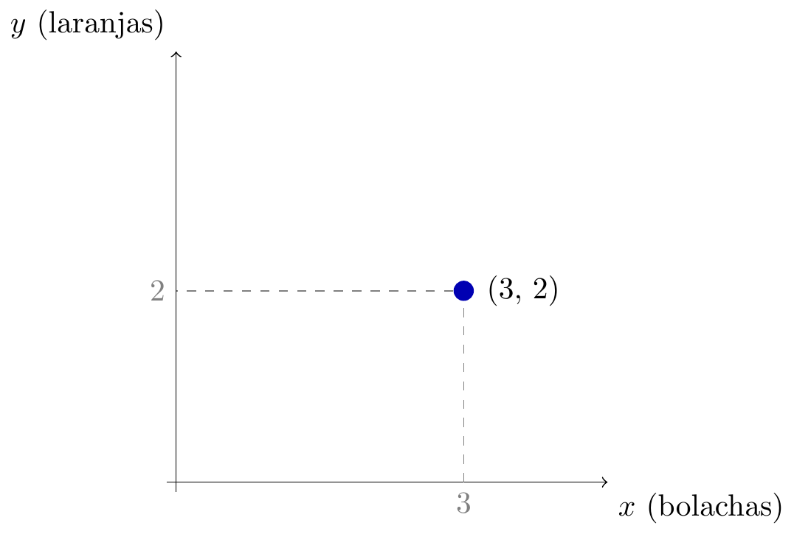
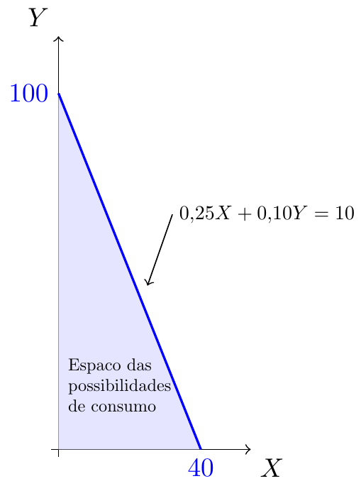
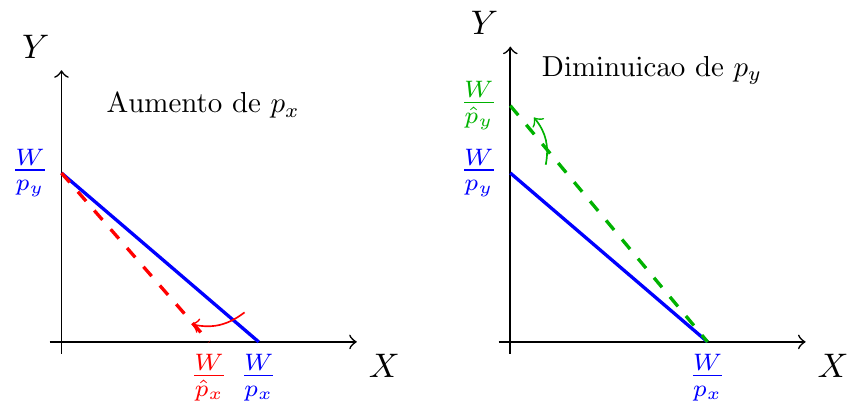
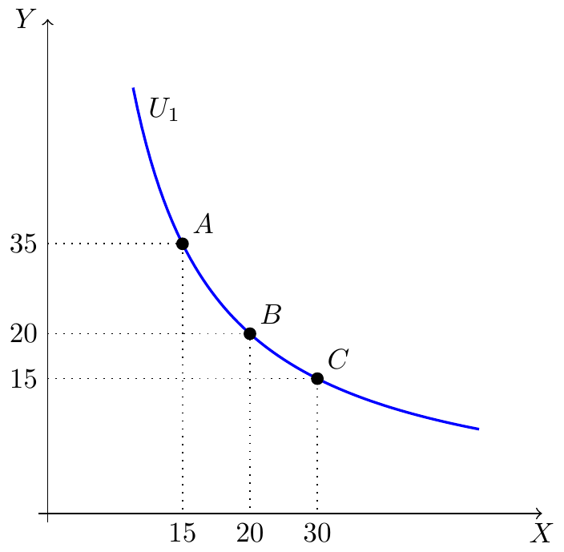
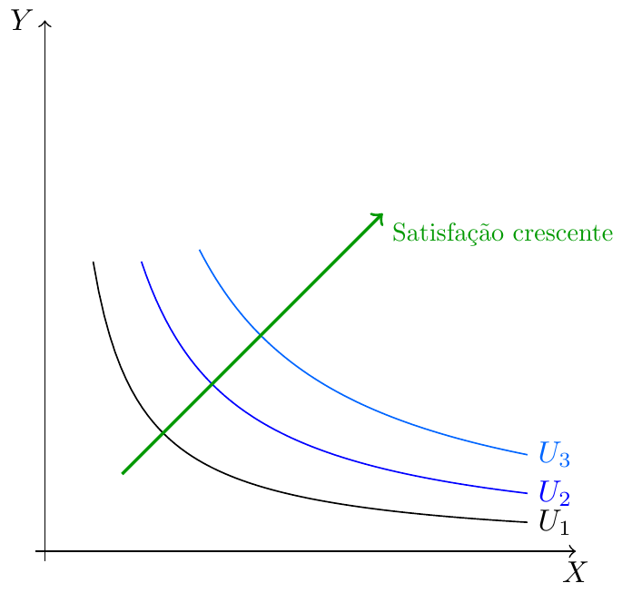
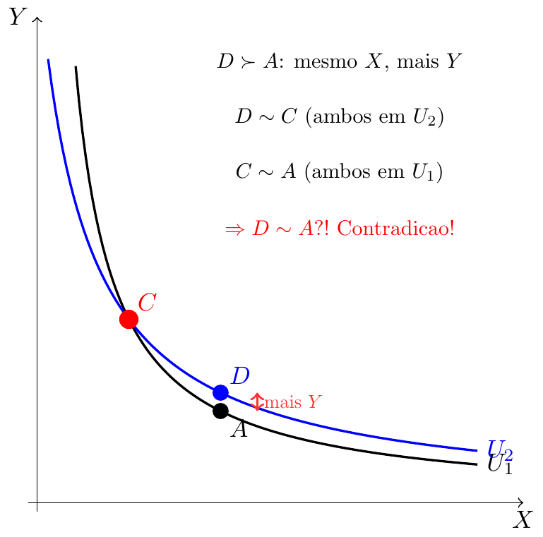

Microeconomia
Cabaz, Espaço e Restrição Orçamental, Preferências e Racionalidade
Onde Estamos no Modelo 🗺️

- Hoje: Restrição Orçamental e Preferências
Cabaz e Espaço de Consumo 🛒
Cabaz de Bens
Definição: Cabaz de Bens
É composto por quantidades de vários bens. Quando se comparam cabazes, os bens são os mesmos, mas as quantidades de cada um variam.
Exemplo: Dois bens — bolachas de chocolate (\(x\)) e laranjas (\(y\)).
- O cabaz \((3, 2)\) é composto por 3 bolachas e 2 laranjas.
- Graficamente, é um ponto do espaço \((x, y)\).
Cabaz no Espaço de Consumo

Conjunto das Possibilidades de Consumo
- É o conjunto de todos os cabazes que podem ser adquiridos com um dado orçamento.
- O conjunto de cabazes cuja despesa esgota o orçamento designa-se Restrição Orçamental.
Restrição Orçamental 📊
O Problema do Consumidor
De entre os cabazes disponíveis, encontrar a escolha óptima, dadas as variáveis exógenas:
- Orçamento (\(W\))
- Preços de mercado (\(p_x\), \(p_y\))
O consumidor decide as variáveis endógenas: \(X\) e \(Y\).
Restrição Orçamental — Formulação
\[X p_x + Y p_y = W\]
Exemplo: €10 para gastar em bolachas e laranjas.
- Cada bolacha custa €0,25 → \(p_x = 0{,}25\)
- Cada laranja custa €0,10 → \(p_y = 0{,}10\)
\[0{,}25\, X + 0{,}10\, Y = 10\]
Restrição Orçamental — Gráfico

- Também se escreve como \(Y = 100 - 2{,}5X\)
Declive da Restrição Orçamental
\[X p_x + Y p_y = W \quad\Leftrightarrow\quad Y = {\color{red}{\frac{W}{p_y}}} - {\color{blue}{\frac{p_x}{p_y}}} X\]
- \(\color{red}{\dfrac{W}{p_y}}\): ordenada na origem — máximo de \(Y\) se \(X=0\)
- \(\color{blue}{-\dfrac{p_x}{p_y}}\): declive — preço relativo de \(X\) em termos de \(Y\)
No exemplo: \(Y = {\color{red}{100}} - {\color{blue}{2,5}}\, X\)
Efeito de Mudança de Preço

- Mudança de \(p_x\) → roda em torno do intercepto em \(Y\)
- Mudança de \(p_y\) → roda em torno do intercepto em \(X\)
Efeito de Mudança de Orçamento

- Alteração em \(W\) → translação paralela — o declive \(-p_x/p_y\) não muda
Preferências e Racionalidade 🧠
O Problema da Escolha
O espaço de consumo diz-nos o que é possível comprar.
Mas não nos diz o que o consumidor prefere — precisamos das suas preferências.
Questão central: De entre todos os cabazes acessíveis, qual é o melhor?
Axioma 1 — Desejabilidade
Axioma 1: Desejabilidade (Não Saciedade)
Consumir mais é melhor.
Se \(A = (25, 30)\) contém mais de ambos os bens do que \(B = (20, 20)\), então \(A \succ B\).
Desejabilidade — Gráfico

- E se um cabaz tiver mais de um bem e menos do outro?
Curva de Indiferença
Definição: Curva de Indiferença
Conjunto de todos os cabazes indiferentes entre si.
- Devido à desejabilidade, cabazes indiferentes têm sempre mais de um bem e menos do outro.
- No espaço \(XY\), a curva de indiferença tem inclinação negativa.
Curva de Indiferença — Gráfico

\(A\), \(B\) e \(C\) são cabazes indiferentes — pertencem à mesma curva \(U_1\).
Mapa de Indiferenças

Axioma 2 — Completude
Axioma 2: Preferências Completas
Dados dois cabazes, o consumidor sabe sempre dizer qual a relação de preferências entre eles. Todos os cabazes pertencem a uma curva de indiferença.
- Quanto mais alta a curva onde se localiza um cabaz, maior a satisfação.
Axioma 3 — Transitividade
Axioma 3: Preferências Transitivas
Se \(A\) é preferido a \(B\), e \(B\) é preferido a \(C\), então \(A\) é preferido a \(C\).
Consequência directa: as curvas de indiferença não se podem cruzar!
Curvas de Indiferença Não se Cruzam

Curvas de Indiferença Não se Cruzam
A lógica do gráfico:
- \(C=(1,2)\) é a intersecção, um ponto nas duas curvas
- \(A=(2,1)\) está só em \(U_1\); \(D=(2,1.2)\) está só em \(U_2\) — o mesmo \(X\), mas \(D\) tem mais \(Y\)
- A seta “\(D \succ A\)” evidencia esta relação
- A contradição é evidente: As CI cruzam-se!
Racionalidade do Consumidor
Preferências Racionais
Em contexto de desejabilidade, as preferências são racionais se forem completas e transitivas.
Outras hipóteses da Teoria do Consumidor:
- Informação completa sobre preços e características dos bens
- Continuidade do espaço orçamental
- Independência das escolhas entre consumidores
Exercícios ✏️
Exercício 1 (Escolha Múltipla)
O orçamento de um consumidor é \(W = 60\)€, \(p_x = 3\)€ e \(p_y = 4\)€. Qual é a equação da restrição orçamental na forma \(Y = f(X)\)?
(A) \(Y = 20 - \dfrac{4}{3} X\) \(\qquad\) (B) \(Y = 15 - \dfrac{3}{4} X\)
(C) \(Y = 15 - \dfrac{4}{3} X\) \(\qquad\) (D) \(Y = 20 - \dfrac{3}{4} X\)
Resposta: (B)
\(Y = \dfrac{60}{4} - \dfrac{3}{4} X = 15 - 0{,}75\, X\)
Exercício 2 (Escolha Múltipla)
Com preferências racionais e desejabilidade, qual afirmação é verdadeira?
(A) Dois cabazes são indiferentes mesmo que um tenha mais de ambos os bens.
(B) As curvas de indiferença têm inclinação positiva.
(C) Curvas mais afastadas da origem representam maior satisfação.
(D) As curvas de indiferença podem cruzar-se se as preferências forem transitivas.
Resposta: (C)
Pela desejabilidade, cabazes com mais quantidade são preferidos — curvas mais afastadas da origem correspondem a maior satisfação.
Exercício 3 (Desenvolvimento)
Um consumidor dispõe de €120 para gastar em \(X\) (€4/un.) e \(Y\) (€6/un.).
a) Equação da restrição orçamental na forma \(Y = f(X)\). Identifique declive e ordenada na origem.
b) O preço de \(X\) sobe para €6. O que acontece graficamente?
c) O consumidor recebe um subsídio de €60 (lump-sum). Efeito sobre a restrição?
Solução
a) \(4X + 6Y = 120 \Rightarrow Y = 20 - \tfrac{2}{3}X\). Declive: \(-\tfrac{2}{3}\); Ordenada na origem: \(20\).
b) Com \(p_x = 6\): \(Y = 20 - X\). O intercepto em \(Y\) mantém-se em \(20\); o intercepto em \(X\) passa de \(30\) para \(20\). A RO roda para dentro em torno de \((0,\,20)\).
c) Com \(W = 180\): \(Y = 30 - \tfrac{2}{3}X\). Translação paralela para fora — o declive não muda.

Microeconomia (Plano de Transição)